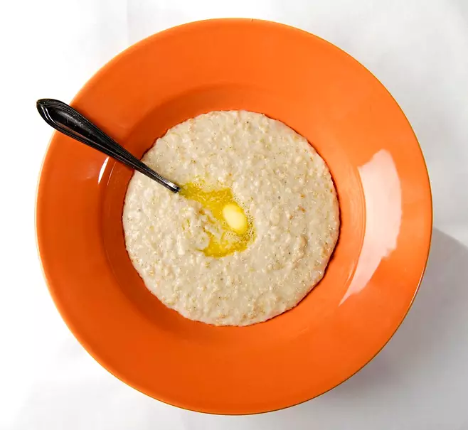

Oatmeal summoning guide
Oatmeal, your road to hell
And life eternal
Serves 4 devotees
Begin ritual
Ingredients required
- 5 dl water or water of life(blood)
- 4 dl Oatflakes
- 5 dl VALIO(very important) whole milk
- ½ tsp salt
Dictum
- Boil the water and salt in cauldron. Mix in oatflakes. Boil few min
- Add VALIO whole milk. Let cook 5 min mixing between
- Lift the Infernally blazing hot cauldron by bare hands and set aside for 5 min to recede
- Serve with buttery eyeball, a hint of sugar and VALIO whole milk
Summoning ritual time
10 min
Ritual difficulty
Beginner cultist
